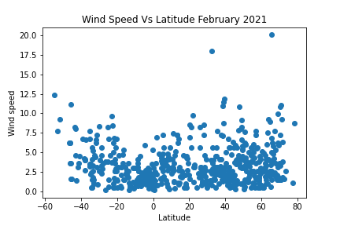

Wind Speed Vs Latitude

Wind speed of selected regions versus latitude.
Wind speed increases as region latitute approaches the equator. This may be due to higher temperature and lighter clouds which
strengthens the wind and reduces the load of clouds the wind has to carry respectively. Wind speed is generally lower in the southern hemisphere than around the equator and the north. Land ans sea breeze effects may expalin some of these observations.